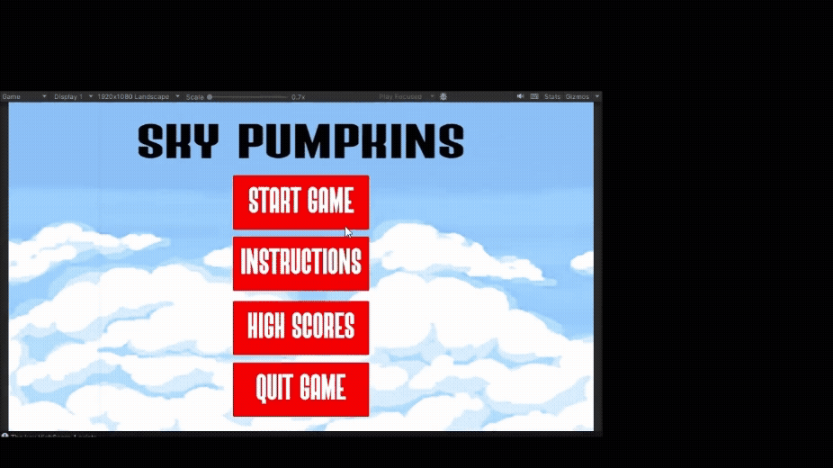

Sky Pumpkins

Gameplay Demo

Description
Sky Pumpkins is an arcade-style game developed using Unity and C#. The player controls a plane in the sky and must shoot incoming enemy pumpkins while avoiding collisions. The objective is to survive as long as possible, score points, and progress through increasingly difficult levels.
Key Features
- Mouse-based movement (click and hold to control the plane)
- Automatic shooting mechanics
- Enemy pumpkins with different sizes and point values
- Score tracking system
- 3-life system (game over when lives are lost)
- Power-ups including multi-shot and shield abilities
- On-screen power-up charge bar
- Increasing difficulty across levels
Technologies Used
- Unity Hub
- C#
- Visual Studio 2022